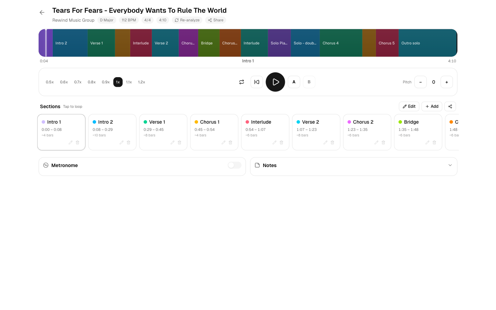
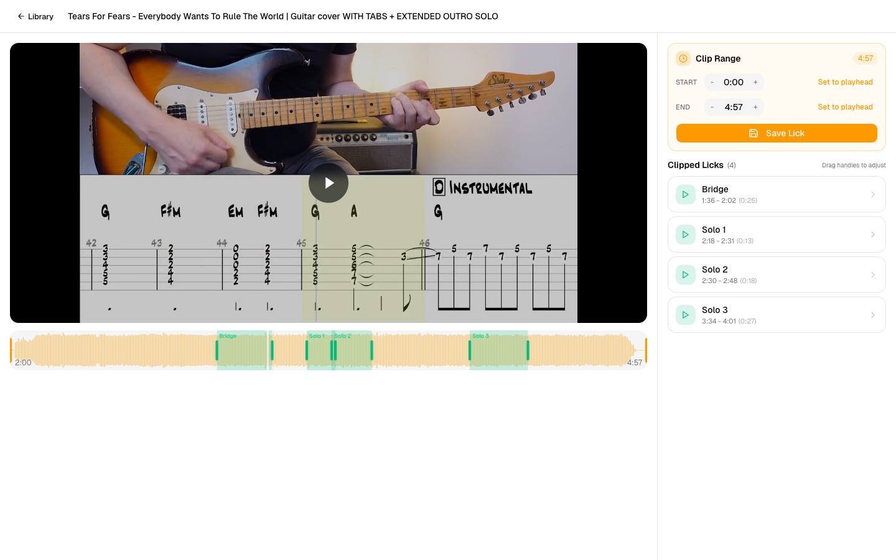
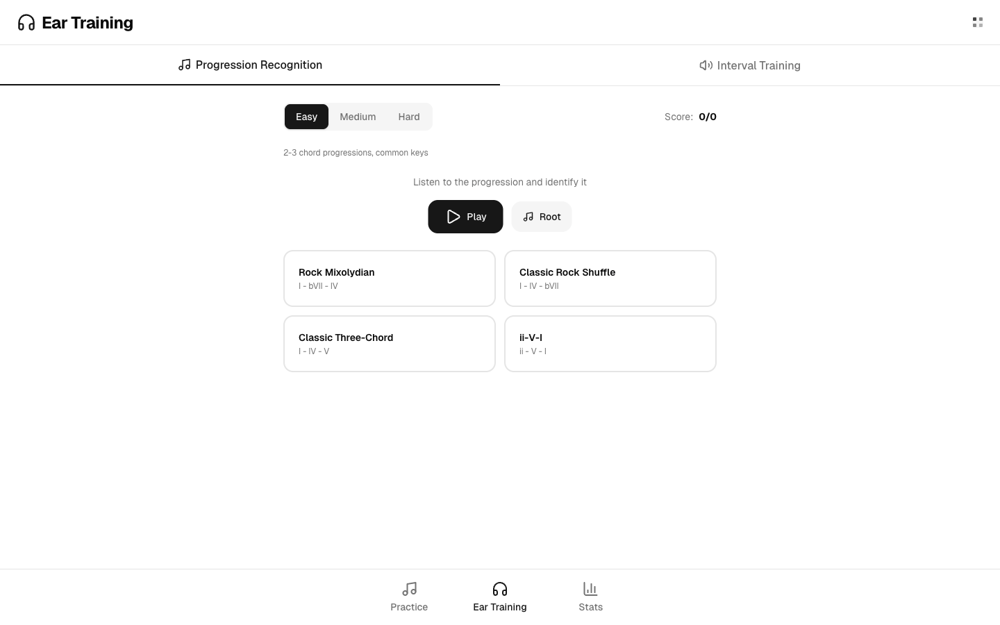
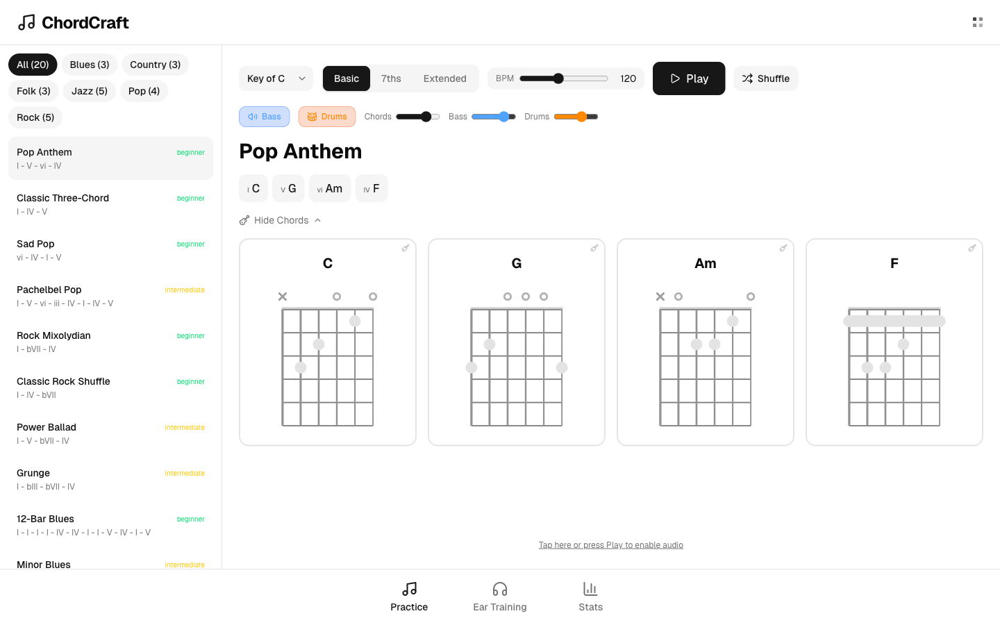
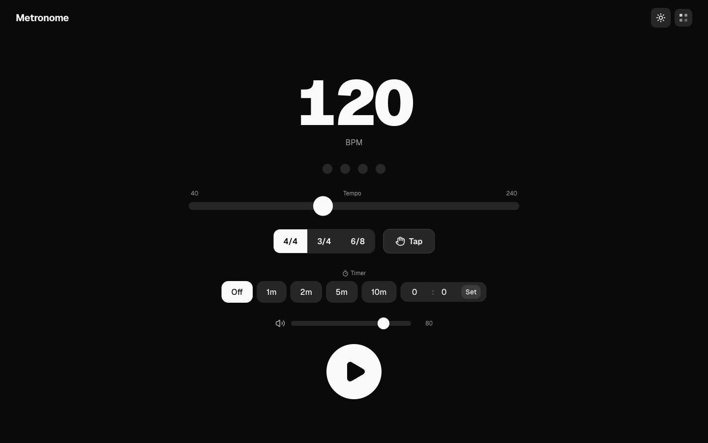
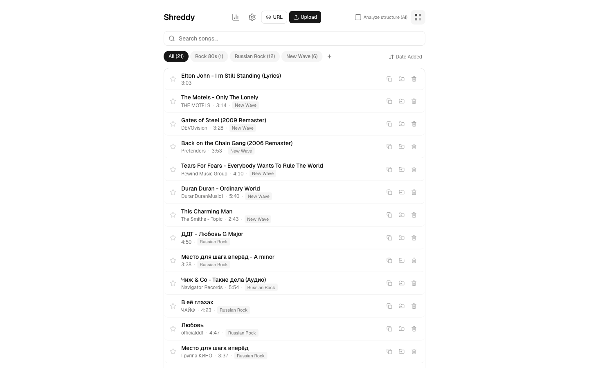
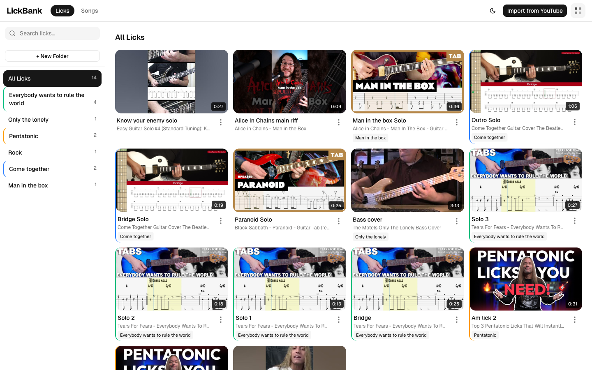
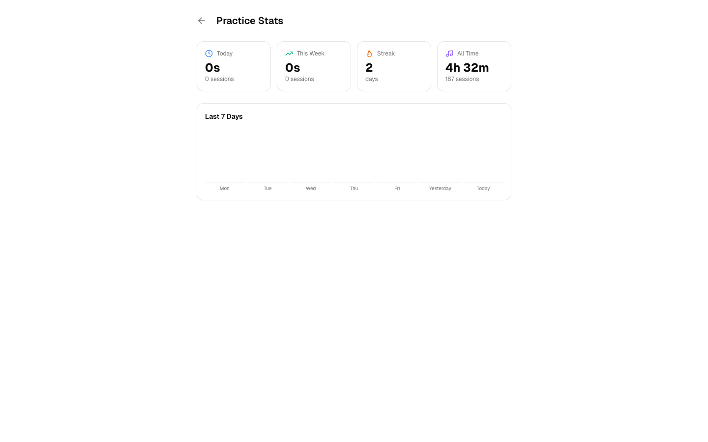

I play guitar. I wanted software that respects the way musicians actually learn — slow passages down, loop the hard bits, steal licks from YouTube, feel the shape of a progression. So I built four apps.
Drop in an MP3 or paste a YouTube URL. Shreddy splits the song into sections using AI — intro, verse, chorus, solo — then lets you loop the hard bits, slow them down without ruining the pitch, and track what you've practiced.

Upload a song and Shreddy marks the intro, verses, choruses, bridges, and solos automatically — so you can jump straight to the part you need to work on.
Tap any section to loop it. Shift-tap for a range. Set custom A–B markers anywhere. Your loops survive reloads, so tomorrow's practice picks up where today's left off.
Play back at 0.5x to 1.2x with no pitch change. Transpose up or down twelve semitones to match your voice or a different tuning.
See the whole song's structure at a glance. Color-coded sections. Tempo, key, and time signature are detected from the audio itself.
Locked to the song's beat. Count-in, tap tempo, volume. No need to switch apps mid-practice.
Daily streaks, weekly minutes, most-practiced songs. Proof that you actually showed up — not just a number, a habit.
Every guitar player has a YouTube history full of "that one lick at 2:43." LickBank is where those moments stop getting lost. Pull the video in, scrub to the phrase, trim the exact clip, save it with a name.

Set the clip start and end from the playhead. The waveform shows every lick you've already saved from this source, right where they live in the song.
Paste a URL. The video lands locally with its thumbnail and title, ready to clip. No tab-hopping. Nothing lives at the mercy of a broken link.
Every clip is filed under the song it came from and tagged by folder — "Pentatonic," "Rock," whatever. Your library is the sum of every phrase you've ever wanted to play.
ChordCraft is built around one goal: learning to identify chord progressions by ear. Listen, guess, score. Level up difficulty as your ear sharpens. Back it up with a practice mode where you can change keys, swap voicings, and study real progressions in context.

ChordCraft plays a progression; you identify it from the options. Easy / Medium / Hard scales from three common chords in a familiar key to longer progressions in harder keys. Score tracks how you're doing.
A separate drill for hearing the distance between notes — the foundation of every melody you'll ever figure out by ear. Same fast-feedback loop.
Short sessions, immediate right/wrong, a running score, difficulty that nudges up as you get it. The habits that made you learn a language work for your ears too.
Transpose any progression to any of the twelve keys with one tap. Perfect for matching a vocalist, training across the circle of fifths, or just hearing how the same shape lives in a different register.
Start with basic triads. Graduate to 7ths and extended voicings when you're ready. Every chord comes with real fretboard diagrams so you can play along as you listen.
Hear the progression in context, not as isolated chord tones. Mix the bass and drum levels to your taste so the harmony is the thing you're tracking.

The metronome I wanted on my iPad: one screen, huge numbers, dark when the lights are low. No ads, no subscriptions, no fifteen settings you'll never use. Just the click.

Tap along to find the BPM of whatever's in your head. Works on touch, click, or keypress.
4/4, 3/4, 6/8. Beat indicators at the top show exactly where you are in the measure.
Fade-out timer at 1, 2, 5, or 10 minutes — or type your own. Bound your practice blocks without breaking flow.
Every app speaks the same visual language. The same song list that holds your Shreddy tracks organizes your LickBank clips and ChordCraft progressions. Learn the interface once — use it everywhere.

Tracks you're learning, grouped by genre and folder.

Every lick you've saved, filed by source and theme.

Streaks, weekly minutes, most-practiced songs — across every app.